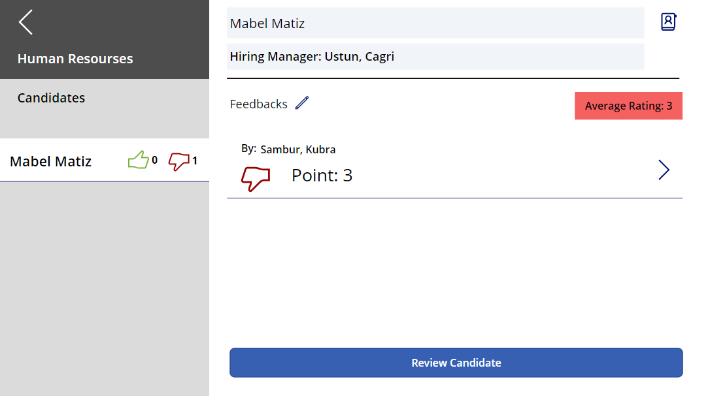

Projects
HR Candidate Management System
This app aims to facilitate the job of HR unit in candidate management. I used dataverse for store the data. All fields are dynamic. I used canvas app for this app. I used 5 tables for this app. These are Departments, Positions, Candidates, Applications and Reviews. All the features you see in the project are in working condition. I have not included the forms we have added on some pages here, but if you want, I can show them in the future.
The project starts with the home page first. From here, we can reach the page where all the candidates are listed and the departments page that allows us to reach the relevant position.
On the Candidates Page we can see all candidates and if we click on the candidate we can see the details of the candidate. We can also add a new candidate from this page with add icon which located top right.
On the Department Page we can see all departments and we cam add a new department from this page. There is a edit icon if we click this icon we can delete or edit the department name. Also we can reach positions of the department with click the department name.
In the Positions Page we can see all positions of the department which we clicked on the department page. We can add a new position from this page with add icon which located left side. Also we can edit or delete the position with edit icon which located right side. We can add new application to the position with Add Application button. Additionally we can see the reviews count of the applications. If we click the application we can see reviews of the application and we can add new review to the application.
In the Reviews Page we can see all reviews of the application which we clicked on previous page. We can add a new review from this page with Review Candidate Button which located bottom of the page. We can delete the review with edit icon, if we clicked edit icon delete button will appear. But user can delete just own reviews so delete button will appear just own reviews.
On the Add review page we can add a new review to the application. Whem we click the submit button it will shown on the reviews page.
© Kubra Sambur Website. All Rights Reserved.